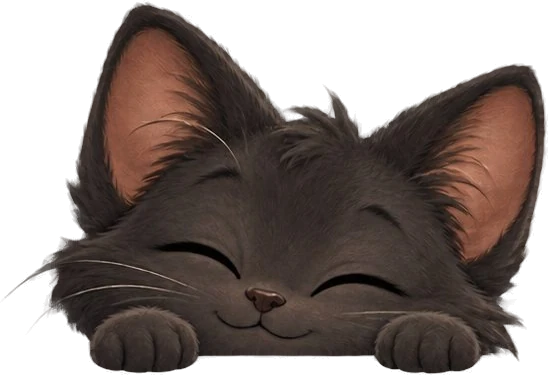

Mousehold
Mousehold Cat Café
A cozy sanctuary for cats and the people who love them.
Something small is being built here — starting with the cats themselves: their profiles, their personalities, and their favorite things.

Mousehold
A cozy sanctuary for cats and the people who love them.
Something small is being built here — starting with the cats themselves: their profiles, their personalities, and their favorite things.